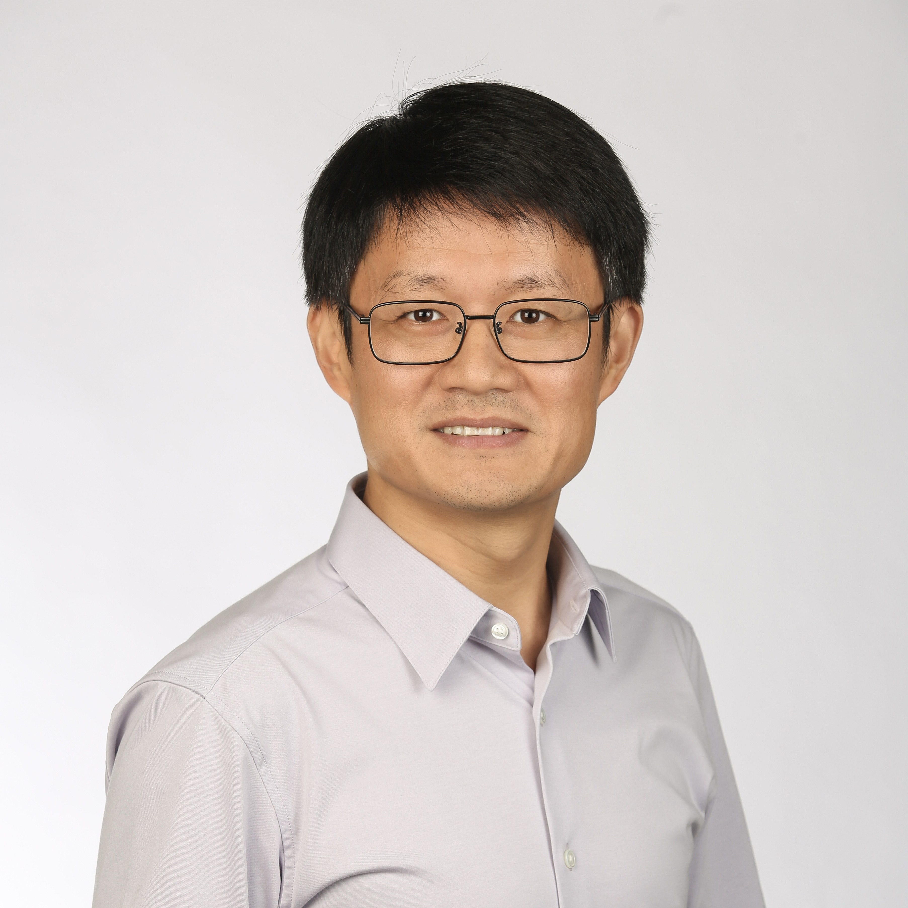

Cong Shen
|  | Associate Professor Office: E-317 Thornton Hall |
I am an Associate Professor in the Department of Electrical and Computer Engineering of University of Virginia. I am also a member of the UVA Link Lab. I got my B.S. and M.S. from Tsinghua University, and Ph.D. from UCLA. I received the NSF CAREER award in 2022.
My research interests span a number of interdisciplinary topics in machine learning, wireless communications, and networking. Some of my current research topics are:
In-context learning and Transformers
Distributed and decentralized learning
Multi-armed bandits, reinforcement learning, and their engineering applications
Wireless communications and networking
News
Jan. 2025: Two papers accepted to ICLR 2025 and two papers accepted to AISTATS 2025. Topics include multi-armed bandits, RLHF, in-context learning, transformers, and differential privacy. See publication for details.
Jan. 2025: The collaborative paper “Stereoscopic artificial compound eyes for spatiotemporal perception in three-dimensional space” between Prof. Kyusang Lee's group and ours has been selected as the Best Paper of 2024 of Science Robotics. Read the Engineering School news here.
Jan. 2025: Our paper on transformer-based physical-layer wireless system design has been accepted to ICC 2025.
Jan. 2025: PhD student Zhoubin Kou joins our group. Welcome!
Oct. 2024: Peng Wang joins our group. He is in our CS department and co-advised by me and Prof. Jing Yang.
Sept. 2024: Three papers accepted to NeurIPS 2024. Topics include in-context learning, transformers, game theory, and prompt engineering in LLMs. See publication for details.
Sept. 2024: Kun's accepted Asilomar 2024 paper Average Reward Reinforcement Learning for Wireless Radio Resource Management is selected as a finalist for the Best Student Paper Award.
Sept. 2024: Three new PhD students join our group: Di Wu, Songwei Dong, and Zihao Liang. Welcome!